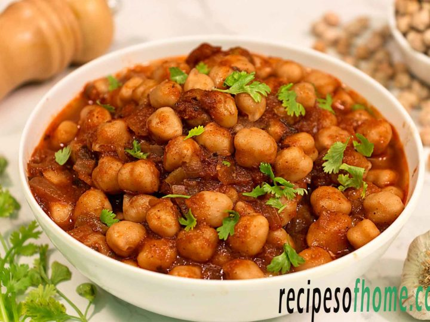

Chana Masala

Description
Chana masala is a north Indian dish that is simply chickpeas
with tomatoes and spices. A delicious meal accompanied with
rice or bread.
Ingredients
- 1 onion
- 2 cloves garlic
- 2 teaspoons ginger
- 1 green chili
- 1 teaspoon garam masala
- 1 teaspoon turmeric
- 4 cups chopped tomatoes
- 4 cups cooked chickpeas
- 1/2 cup tomato sauce
- 1/2 cup plain yoghurt
Directions
- Heat oil in a large saucepan over medium heat.
Saute onion, garlic, ginger, and green chile pepper
in hot oil until onions are translucent, about 10
minutes.
- Season onion mixture with cumin, paprika, coriander,
garam masala, turmeric, and cayenne pepper; stir.
Cook onion with spices until fragrant, 1 to 2 minutes.
Add tomatoes, chickpeas, and tomato sauce; stir and
simmer until the tomatoes soften, about 5 minutes.
- Stir yogurt into the mixture until the color of the
mixture is even; simmer until again hot, about 5
minutes more. Remove pan from heat; stir lemon juice
and salt into the mixture.